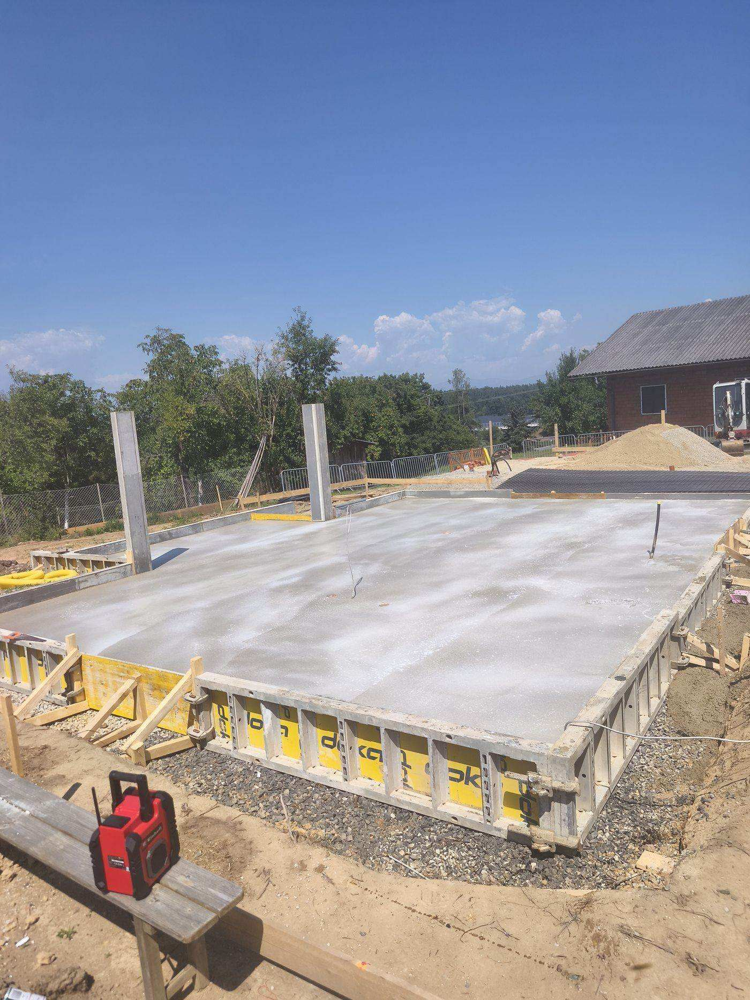
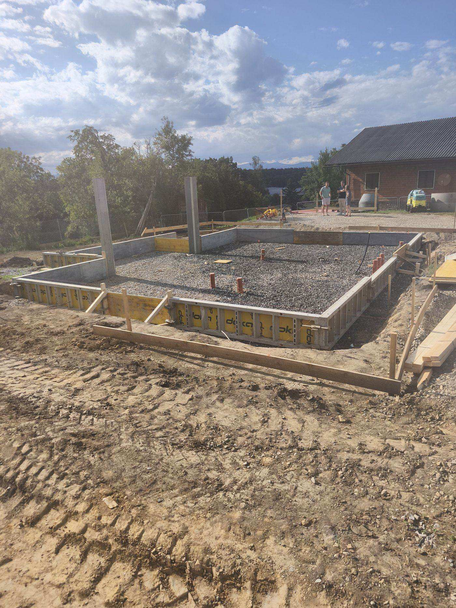
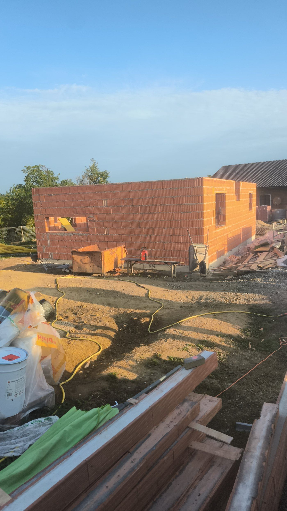

Neubau in der Steiermark
Bau von Wohn- und Gewerbeobjekten vom Aushub bis zum bezugsfertigen Raum.

Von der Fundamentplatte bis schlüsselfertig
Wir übernehmen den Bau eines Hauses oder Gewerbeobjekts vollständig oder in Phasen – als Rohbau oder schlüsselfertig. Wir leiten die Arbeit so, dass der Auftraggeber Verlauf, Termine und Kosten kennt. Wir bauen in der gesamten Steiermark – Graz, Leibnitz und Umgebung – sowie in ganz Slowenien.
- Vorbereitungs- und Erdarbeiten
- Fundamente und Fundamentplatte
- Mauerwerk und Stahlbetonkonstruktionen
- Geschossdecken und Dachstuhl
- Rohbau oder schlüsselfertige Ausführung
Einblick in den Bau vom Rohbau bis zum fertigen Objekt.


Ablauf eines Neubaus
Den Neubau leiten wir vom Aushub bis zur schlüsselfertigen Übergabe – wir können aber auch nur einzelne Bauphasen übernehmen.
- Erdarbeiten, Aushub und Fundamentplatte oder Streifenfundamente
- Bau der Tragkonstruktion, Geschossdecken und Wände
- Dachstuhl und Eindeckung mit Spenglerarbeiten
- Fassade, Fenster sowie Haustechnik- und Elektroinstallationen
- Innenausbau: Estriche, Verputz, Fliesen und Endarbeiten
Was kostet ein Neubau in der Steiermark?
Der Preis eines Neubaus hängt von Größe und Konzept des Objekts, der gewählten Konstruktion, dem Materialstandard und davon ab, ob schlüsselfertig oder in Phasen gebaut wird. Nach einer Besichtigung vor Ort erstellen wir eine übersichtliche Kostenschätzung nach einzelnen Phasen, unverbindlich.
Angebot anfragenHäufige Fragen
Bauen Sie schlüsselfertig oder nur den Rohbau?
Wie lange dauert der Bau eines Hauses?
Was kostet ein Neubau in der Steiermark?
Planen Sie einen Neubau?
Rufen Sie an oder schreiben Sie – wir vereinbaren eine Besichtigung vor Ort und eine Kostenschätzung.